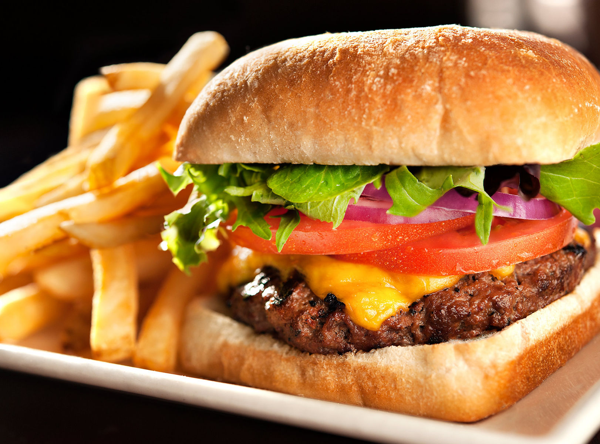

Burgers
We provide variety of burgers at a very affordable pricing rates. Our burgers are the best burger in the world.
Types of burger :
- American Burgers
- Chessee Burgers
- Mexian Burger
- Panner Cheese Burger
- Maharaj Burger
GST Cost....................................$100
Pricing.......................................$1000
Pizza
We provide variety of Pizza at a very affordable pricing rates. Our Pizzas are the best Pizzas in the world
Types of PIZZA :
- American Corn
- Veg Singles
- Capsicum Topping
- Chesse Topping
- Mexian Cheese Corn Pizza
GST Cost....................................$100
Pricing.......................................$2000

French fries, or simply fries (North American English), chips
(British and Commonwealth English), or french-fried potatoes, are batonnet or allumette-cut deep-fried potatoes.
French fries are served hot, either soft or crispy, and are generally eaten as part of lunch or dinner or by themselves as a snack, and they commonly appear on the menus of diners, fast food restaurants, pubs, and bars. They are usually salted and, depending on the country, may be served with ketchup, vinegar, mayonnaise, tomato sauce, or other local specialties. Fries can be topped more heavily, as in the dishes of poutine or chili cheese fries. Chips can be made from kumara or other sweet potatoes instead of potatoes. A baked variant, oven chips, uses less oil or no oil. One very common fast food dish is fish and chips.
Garlic bread (also called garlic toast) consists of bread
(usually a baguette or sour dough like a ciabatta), topp
ed with garlic and olive oil or butter and may include
additional herbs, such as oregano or chives.It is then
either grilled or broiled until toasted or baked in a
conventional or bread oven.
Pasta is a type of food typically made from an unleavened dough of durum wheat flour (semolina) mixed with water or eggs, and formed into sheets or various shapes, then cooked by boiling or baking. Rice flour, or legumes such as beans or lentils, are sometimes used in place of wheat flour to yield a different taste and texture, or as a gluten-free alternative. Pasta is a staple food of Italian cuisine.
Soft drinks consumption is still a controversial issue
for public health and public policy. Over the years,
numerous studies have been conducted into the
possible links between soft drink intake and medical
problems, the results of which, however, remain high
ly contested.
Ice cream (derived from earlier iced cream or cream ice is a sweetened frozen food typically eaten as a snack or dessert. It may be made from dairy milk or cream and is flavored with a sweetener, either sugar or an alternative, and any spice, such as cocoa or vanilla. Colourings are usually added, in addition to stabilizers. The mixture is stirred to incorporate air spaces and cooled below the freezing point of water to prevent detectable ice crystals from forming. The result is a smooth, semi-solid foam that is solid at very low temperatures (below 2 °C or 35 °F). It becomes more malleable as its temperature increases.